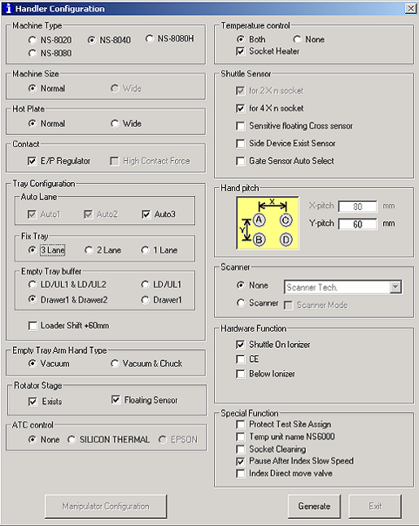

Service History
Subject: NS8040 Index door sensor( "Shuttle ON Ionizer")
Handler Model: NS-8040(EEMS, S/N: 181590)
Controller: RC520( HMI 2.1, SPEL CT 3.11ds)
Date: 4 Sep 2008
Symptom
EEMS NS8040 has an issue regarding index door sensor. When the index door is open, the handler still able to operate which shouldn't be the case. EEMS found out this issue when the input arm hit the index door as the door was not properly close.
Action
Checked the wring and the function of the index door sensor, no abnormalities found.
Checked the other NS8040 on the index door sensor and is working fine.
In Handler Configuration Windows, Hardware Function ->Shuttle ON ionizer, must be checked(ticked).
Please check and click to enable the function.
(EPSON mistake in naming the index door sensor with "Shuttle ON ionizer" during R&D.)
Remarks
1) EIN 30 of 16CH (located below Loader unit) include Cover Open Switch(Input Bit 299)
2) EIN7 consist of Input Bit( 104~110 connected to SKP452 E-stop board) for Doors
3) EIN30 of 8 CH (located above Index) include Input Bit 284 for Index side cover door

Cause